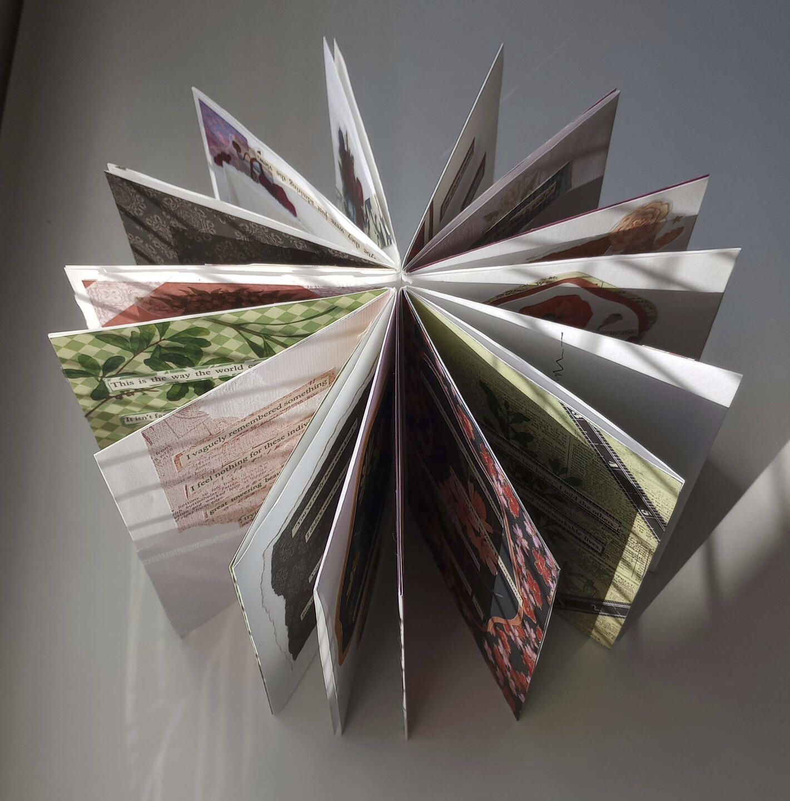

Mollie Hartje
• Author • Artist • Activist •
Hiya! My name is Mollie, I go by any pronouns, and I'm based in Djaara, Dja Dja Wurrung Country.
My work tends to focus on exploring queer experiences and digital ergodic storytelling forms. I'm currently researching how alternate reality games can be used to provoke discussions on domestic violence and abuse.
If you'd like to get in touch, please email me via aaazurial [at] proton [dot] me
Recommendations
Works that inspire me that I hope might inspire you, too.
• Dusk by Robbie Arnott
• The Woman in the Seal Skin by Lauren Keegan
• Orlando by Virginia Woolf
• Our Dreams at Dusk by Yuhki Kamatani
• The Lady of the Lake by Jean Menzies
• Poet Mystic Widow Wife by Hetta Howes
• The Shaman, the Outsider, and the Diet of Worms by LITHOBREAKERS
• portrait on imagined horizon by Haraiva
• Missed Messages by Angela He
What I'm Listening To
One of my favourite albums!

Ouroboros was an experiment in analogue interactive fiction through the means of cut and paste poetry. Through the literal dissection of twelve books, I abstracted sentences from their source contexts to create new scenes, pasting once disconnected text together in order to create instances of poetry. Through the format of four zines, I invited the audience to read them in any order they wished - back to front, in reverse, picking pages to read as they pleased - to create their own stories. Created for the Cut & Paste Festival ran by Rookie.
Digitisation of this work is in progress. Please check in again soon!